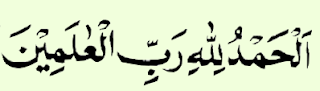
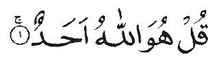

UJIAN AKHIR SEMESTER
TAHUN AKADEMIK 2014/2015
Mata Pelajaran
: Pendidikan Agama Islam
Guru
: Siti Nur Janah, S.Ag.
Kelas
: IV SD
Hari/Tanggal
: Sabtu, 3 Februari 2014
Waktu
: 90 menit
Sifat
: Close Book
SOAL PILIHAN GANDA
Surat Al-Fatihah terdiri dari .... ayat.
5
6
7
8
Surat Al-Fatihah mempunyai arti ....
Cahaya
Kebaikan
Pembukaan
Penutup

Arti dari ayat di atas adalah ....
Dengan menyebut nama Allah yang Maha Pengasih dan Penyayang
Segala puji bagi Allah Tuhan semesta alam
Tuhan yang menguasai hari pembalasan
Hanya kepada-Mu Kami menyembah dan hanya kepada-Mu kami memohon pertolongan
Pokok isi surat Al-Iklas adalah tentang ....
Penciptaan manusia
Nikmat di surga
Keesaan Allah SWT
Hari pembalasan

Arti surat Al-Ikhlas ayat pertama di atas adalah ....
Katakanlah Dia Allah itu Maha Esa
Dia tidak beranak dan tidak diperanakkan
Allah tempat meminta segala sesuatu
Tidak ada yang setara dengan Dia
Sifat jaiz bagi Allah ialah sifat ....
Kewenangan atau kebebasan bagi Allah
Yang harus dimiliki Allah
Yang tidak boleh dimiliki Allah
Yang mungkin dimiliki Allah
Sifat jaiz Allah ada satu yaitu ....
Kekal abadi selamanya
Berbeda dengan makhluk ciptaan-Nya
Melakukan segala yang mungkin atau meninggalkannya
Berdiri sendiri tanpa bantuan makhluk-makhluknya
Allah menciptakan bumi dan langit serta segala isinya atas ....
Permintaan malaikat
Permintaan para Nabi
Usulan para malaikat langit
Kehendak-Nya sendiri
Terjadinya sesuatu di dunia ini atau tidak terjadinya sesuatu. Semua ini karena ....
Sifat wajib Allah
Sifat mustahil Allah
Sifat jaiz Allah
Sifat mulia Allah
Semua malaikat bersujud menghormati Nabi Adam AS atas perintah Allah SWT, kecuali iblis. Iblis tidak mau bersujud karena ....
Ia merasa lebih tua dari Adam
Ia merasa lebih rupawan dari Adam
Ia merasa lebih baik dari Adam
Ia merasa lebih buruk dari Adam
Tahun kelahiran Nabi Muhammad SAW dikenal dengan tahun gajah karena pada tahun tersebut terjadi peristiwa ....
Raja-raja yang banyak menaiki gajah
Banyak raja yang mengadakan lomba gajah
Raja Fir’aun yang datang berkunjung membawa gajah
Raja Abrahah yang ingin menghancurkan Ka’bah mengendarai gajah
Ketika masih bayi, Nabi Muhammad saw. diasuh dan disusui oleh ....
Halimah Sadiyah
Siti Hawa
Siti Khadijah
Aisyah
Walaupun nabi Muhammad sudah menjadi yatim piatu sejak kecil namun ia tetap menjadi anak yang punya sikap ....
Manja dan sombong
Mudah menyerah
Baik dan mulia
Besar kepala
Allah SWT menerima tobat dari hamba-hamba-Nya karena Allah SWT itu ....
Maha Melihat
Maha Mendengar
Maha Pencipta
Maha Pengampun
Membaca surat Al Fatihah saat salat hukumnya adalah ....
Wajib
Sunah
Haram
Makhruh
Syarat sah salat di antaranya adalah ....
Suci dari dosa
Memakai wewangian
Suci dari hadas besar dan kecil
Memakai pakaian yang rapi
Syarat wajib salat di antaranya adalah sebagai berikut, kecuali ....
Islam
Balig
Berakal
Sehat
Contoh hal yang dapat membatalkan salat adalah ....
Makan atau minum dengan sengaja
Membaca Al Fatihah dengan pelan
Bernafas dengan sengaja
Mengedipkan kelopak mata
Salah satu rukun salat adalah tertib. Yaitu merupakan suatu perbuatan melakukan rukun-rukun salat secara ....
Santai
Serius
Berurutan
Jelas
Ibunda Nabi Muhammad SAW meninggal dunia pada saat ia berusia ....
10 tahun
8 tahun
6 tahun
3 tahun
SELAMAT MENGERJAKAN